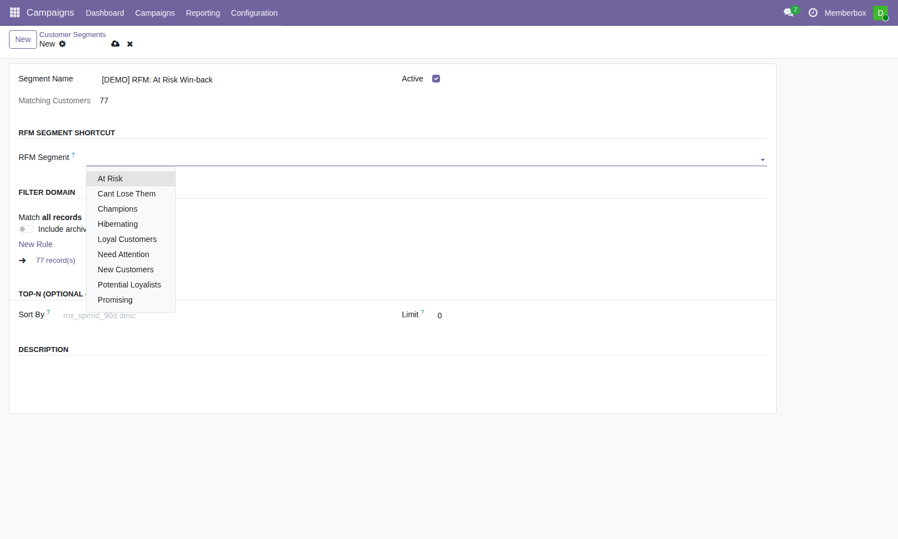
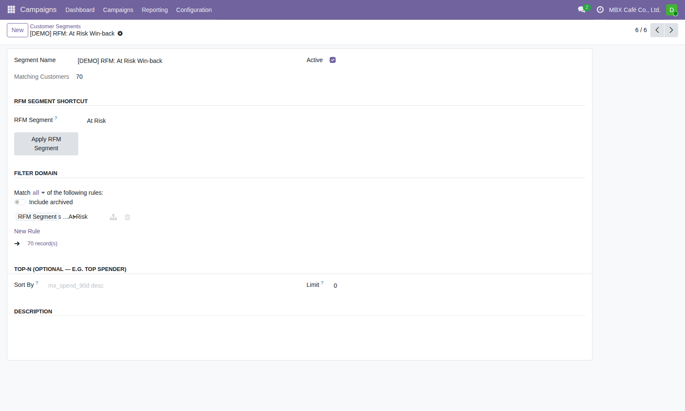

CC
MBX Group · Odoo 19 · Campaign & Data Platform
กรณีศึกษา:
ดึงลูกค้าเสี่ยงหายกลับมาด้วย RFM
ตัวอย่างจริง 1 use case — เลือก RFM Segment "At Risk" มาเป็นเป้าหมายแคมเปญ ตั้งแต่คลิกเลือก segment จนถึงลูกค้าได้คูปองจริง
CDP-CM × MX-RFM · ข้อมูลจริงจาก production (odoo19-mbxai) · 2026-07-26
โจทย์ทางธุรกิจ
มีลูกค้าที่เคยซื้อประจำ แต่เงียบไปนาน — จะรู้ได้ยังไงว่าใครบ้าง
?
สถานการณ์จริง
MBX Café มีลูกค้าที่เคยซื้อบ่อยและใช้จ่ายสูง แต่ห่างหายไปพักหนึ่งแล้ว — ถ้าไม่มีระบบช่วย ทีม Marketing ต้องนั่งไล่ดู order history ทีละคน หรือเดาเอาว่าใครควรได้รับคูปองดึงกลับ (win-back)
เดิม: เลือกลูกค้าเองทีละคน / เขียน filter เอง→
ตอนนี้: เลือกจาก RFM Segment ที่คำนวณจากพฤติกรรมจริง
RFM คืออะไรแบบสั้นๆ: จัดกลุ่มลูกค้าจาก 3 ตัวเลข — Recency (ซื้อล่าสุดเมื่อไหร่), Frequency (ซื้อบ่อยแค่ไหน), Monetary (จ่ายเงินเท่าไหร่) — คำนวณจากออเดอร์จริงทุกเดือน ไม่ต้องเดา
ภาพรวม · MX-RFM Segment Snapshot
ลูกค้า MBX Café 300 คน ถูกจัดกลุ่มอัตโนมัติเป็น 8 segment
ข้อมูลจริง ไม่ใช่ตัวอย่างสมมติ: คำนวณจาก 6,904 แถวประวัติการซื้อจริงของ MBX Café (snapshot ล่าสุดพฤษภาคม 2026) ผ่าน MX-RFM engine แล้ว sync เข้า Odoo อัตโนมัติทุกเดือน
ทำไมเลือก Segment นี้
"At Risk" คือกลุ่มที่คุ้มค่าที่สุดที่จะดึงกลับมา
At Risk (เลือกกรณีนี้)
Recency ต่ำ (ไม่ซื้อมานาน) แต่ Frequency/Monetary เคยสูง — เคยเป็นลูกค้าดีมาก่อน มีโอกาสสูงที่จะกลับมาซื้อถ้าได้รับการดึงกลับตอนนี้ ก่อนจะกลายเป็น Hibernating
เทียบกับ Champions
R/F/M สูงทั้ง 3 ตัว อยู่แล้ว — ซื้อประจำอยู่ ไม่ต้องดึงกลับ เหมาะกับแคมเปญ "ขอบคุณ/reward" มากกว่า win-back
เทียบกับ Hibernating
เงียบไปนานกว่า และ F/M ก็ไม่เคยสูงมาก่อน — ต้นทุนการดึงกลับสูงกว่า ผลตอบแทนต่ำกว่า At Risk
สรุปการตัดสินใจ: เลือก "At Risk" เพราะเป็นจุดที่ยัง "ทัน" อยู่ — ลูกค้ากลุ่มนี้มีมูลค่าเดิมสูง แค่ยังไม่ได้รับการดึงกลับ ต่างจากการยิงแคมเปญกว้างๆ ให้ทุกคนที่ไม่รู้ว่าใครคุ้มทุนจริง
ขั้นตอนที่ 1 · เลือก RFM Segment
เปิด Customer Segment ใหม่ แล้วเลือกจาก dropdown
Campaigns → Configuration → Customer Segments → New→
ตั้งชื่อ→
เลือก RFM Segment
- 1เมนู Campaigns → Configuration → Customer Segments → New — ตั้งชื่อ เช่น "[DEMO] RFM: At Risk Win-back"
- 2หัวข้อ "RFM Segment Shortcut" → คลิก dropdown "RFM Segment" — ระบบดึงรายชื่อ segment ที่ active อยู่จริงมาให้เลือก ไม่ต้องพิมพ์เอง
- 3เลือก "At Risk"
ทำไมต้อง dropdown แทนพิมพ์เอง: ฟิลด์ต้นทาง (rfm_segment) เป็น free-text — พิมพ์ชื่อผิดแม้แค่ตัวเดียวจะได้ target list ว่างเปล่าแบบไม่มี error เตือน dropdown นี้ป้องกันปัญหานั้นตั้งแต่ต้นทาง

Dropdown RFM Segment — ดึงจาก segment ที่ active จริง 8 แบบ
ขั้นตอนที่ 2 · กด Apply แล้วเช็คผลลัพธ์
กด "Apply RFM Segment" — ระบบเขียน filter ให้อัตโนมัติ
- 1กดปุ่ม "Apply RFM Segment" — ระบบเขียน Filter Domain ให้เอง:
[('rfm_segment', '=', 'At Risk')]
- 2Save — ฟิลด์ "Matching Customers" คำนวณจำนวนลูกค้าจริงที่ตรงเงื่อนไข
- 3ผลลัพธ์: 70 คน ตรงกับจำนวนจริงใน MX-RFM segment snapshot เป๊ะ
ข้อควรระวังที่เจอจริง: ต้องสลับ "บริษัทที่ใช้งานอยู่" (active company มุมขวาบน) ให้เป็นบริษัทเจ้าของลูกค้ากลุ่มนั้นก่อน (เช่น "MBX Café Co., Ltd.") — ถ้ายังอยู่บริษัทอื่นอยู่ ระบบ multi-company security จะกรองลูกค้าออกหมด ฟิลด์จะโชว์ 0 คน ทั้งที่ filter ถูกต้องแล้ว

Matching Customers = 70 — ตรงกับข้อมูลจริงของ MX-RFM
ขั้นตอนที่ 3 · นำ Segment ไปใช้ในแคมเปญ
สร้าง Campaign แล้วเลือก Segment นี้เป็น Target
New Campaign→
Add Targets → From Segment→
เลือก "At Risk Win-back"→
70 targets เข้าแคมเปญทันที
- 1สร้าง Campaign ใหม่ — ตั้งชื่อ เช่น "Café At-Risk Win-back"
- 2กด Add Targets → เลือกโหมด "From Segment (Domain Filter)" → เลือก segment ที่สร้างไว้
- 3ลูกค้าทั้ง 70 คนเข้า Target list ทันที ไม่ต้องเลือกทีละคน
ใช้ซ้ำได้: Segment เดียวกันนี้ใช้กับแคมเปญอื่นในอนาคตได้อีก ไม่ต้องสร้างใหม่ทุกครั้ง — ถ้าเดือนหน้าอยากยิงซ้ำ แค่กด Add Targets เลือก segment เดิม (ตัวเลขจะอัปเดตตามข้อมูลล่าสุดอัตโนมัติ)

Add Targets wizard — โหมด From Segment
ขั้นตอนที่ 4 · ผูก Reward แล้วส่งคูปองจริง
ตั้ง Reward ผูกแคมเปญ → กด Invite → ลูกค้าได้คูปองทันที
- 1Sales → Loyalty Programs → ตั้ง Reward (เช่น ส่วนลด win-back) → tab MBX Membership → "Restrict to Campaign(s)" → เลือกแคมเปญนี้
- 2กลับมาที่แคมเปญ → tab Targets → เลือกทั้งหมด 70 คน → กด Invite
- 3ระบบออกคูปองให้อัตโนมัติทันที — ลูกค้าเห็นคูปองที่หน้า /coupons ในแอพสมาชิก
- 4ลูกค้ายื่นโค้ดให้พนักงานพิมพ์ที่ POS — ส่วนลดเข้าออเดอร์ คูปองถูกใช้จริง (flow เดียวกับที่ verify ด้วยธุรกรรมจริงแล้วในคู่มือ)

ตั้งค่า Reward ผูกกับ Campaign
ขั้นตอนที่ 5 · วัดผล แล้ววนกลับเข้า RFM
ดูผลที่ Dashboard — แล้วเดือนหน้า RFM จะคำนวณสถานะใหม่ให้เอง
Dashboard: ดู Conversion ของแคมเปญนี้→
ลูกค้าที่กลับมาซื้อ→
MX-RFM sync รอบเดือนถัดไป→
ขยับ segment จาก At Risk → Loyal/Champions
↻
จุดที่ปิด loop ระหว่าง RFM กับ Campaign
คูปองที่ใช้จริงที่ POS จะทำให้ Campaign Dashboard เห็น Conversion ทันที (ผ่าน cron เช็คทุก 60 นาที) — และในรอบคำนวณ RFM เดือนถัดไป (25 ส.ค.) ลูกค้าที่กลับมาซื้อจริงจะถูกคำนวณ Recency ใหม่ อาจขยับออกจาก "At Risk" ไปเป็น segment ที่ดีขึ้น — วัดผลแคมเปญนี้ได้ทั้งจากฝั่ง Campaign (conversion rate) และฝั่ง RFM (segment migration) พร้อมกัน
ตัวอย่างนี้ยังไม่ได้กด Invite จริง: สร้างไว้แค่ Customer Segment (id ใน Configuration → Customer Segments → "[DEMO] RFM: At Risk Win-back") เป็นตัวอย่างให้ดู ยังไม่ได้ผูกเข้าแคมเปญจริงหรือส่งคูปองจริง — ทีม Marketing ตัดสินใจเองว่าจะเอาไปสร้างแคมเปญจริงเมื่อไหร่
สรุปภาพรวม
RFM บอกว่า "ใคร" — Campaign จัดการว่า "อย่างไร"
MX-RFM คำนวณ segment→
เลือก segment ในแคมเปญ→
ตั้ง Reward + Invite→
ลูกค้าใช้คูปองที่ POS→
Dashboard + RFM รอบถัดไป วัดผล
ก่อนมี RFM segment
เลือกลูกค้าทีละคน หรือเขียน filter domain เอง (เช่น "ไม่มีออเดอร์ 90 วัน") — ไม่รู้ว่าใครในกลุ่มนั้นเคยมีมูลค่าสูงจริง ยิงแคมเปญแบบเดาสุ่ม
หลังมี RFM segment
เลือกจาก dropdown ที่คำนวณจากพฤติกรรมซื้อจริงทุกเดือน — รู้ทันทีว่า "At Risk" 70 คนคือใคร คุ้มค่าที่จะดึงกลับแค่ไหน วัดผลได้ทั้งฝั่งแคมเปญและฝั่ง segment migration
พร้อมสร้างแคมเปญจริงจาก segment นี้ หรือเลือก segment อื่นมาทำ use case ถัดไปได้ตลอดเวลา